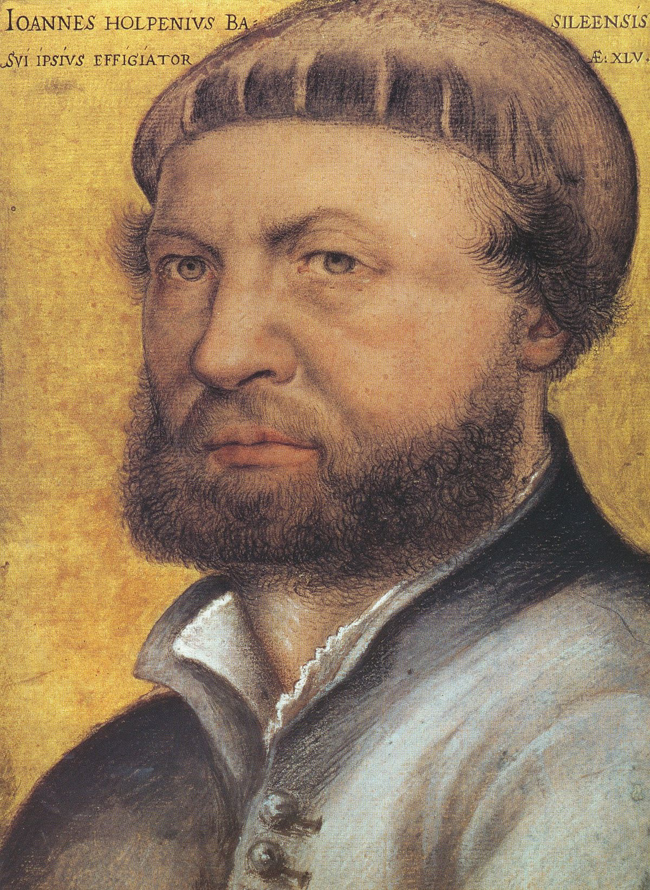

Els ambaixadors
Galeria
Formulari
Creador
Inici
Descripció
El Quadre Jean de Dinteville i Georges de Selve, més Conegut com a Els ambaixadors, és una pintura de 1533 de Hans Holbein el Jove, actualment a la National Gallery de Londres. Triplement important per els Seves Ressonàncies Històriques, per su Riquesa simbòlica i per su Excel·lència plàstica, INCLOU 1 rar Objecte en primer plànol que va ser quelcom Misteriós durante Molt temps. Al segle XX, un historiador de l'art, Jurgis Baltrusaitis, va descobrir que la forma que ocupa el primer plànol de la pintura és el que és DIU freqüentment us de sèpia, vaig sentir de FET una anamorfosi d'1 Crani humà: AQUESTA pintura és una vanitas.
Autor
Hans Holbein el Jove —der Jüngere— (Augsburg, 1497? - Londres, 1543) fou un artista alemany, un dels mestres del retrat en el Renaixement i dissenyador de xilografies, vitralls i orfebreria. Va néixer a Augsburg i des de molt petit va estudiar pintura amb el seu pare, Hans Holbein el Vell, reconegut artista dintre de la tradició flamenca, notable pels seus retrats. Juntament amb el seu germà gran Ambrosius, va treballar primer en el taller del seu pare i posteriorment en el del germà d'aquest, Sigmund Holbein. Cap a 1515, Holbein el Jove i el seu germà Ambrosius es van instal·lar a Basilea, Suïssa, i entraren en el taller del pintor Hans Herbst. Allà va treballar com a il·lustrador de llibres, realitzant xilografies per a les portades de diverses obres i una sèrie d'esbossos en tinta per a L'elogi de la bogeria d'Erasme de Rotterdam.
Retrat de Hans Holbein

Zoom obra